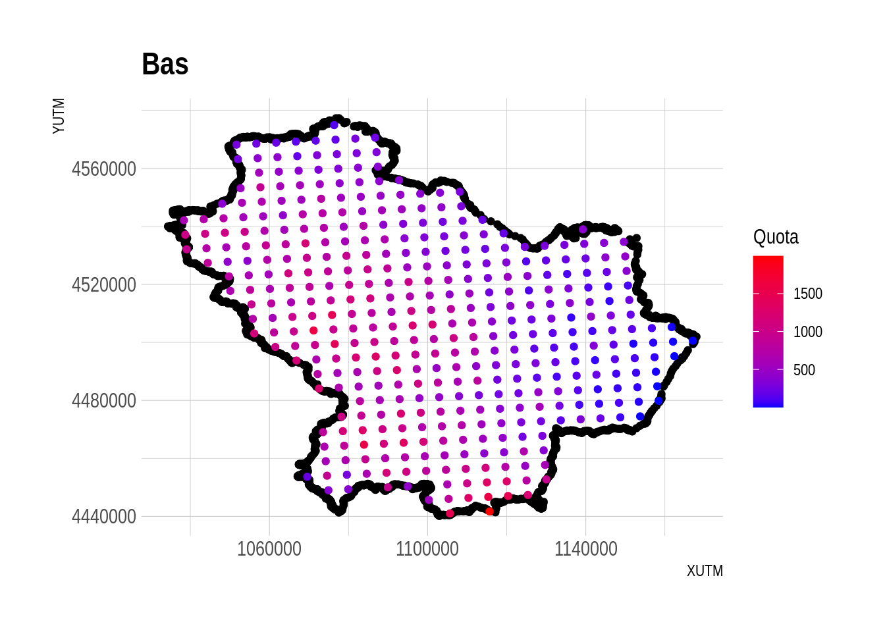

datiAll <- load("_data/datiAll.RData")
rain <- load("_data/RainData.RData")Rainfall
Problem 4
Using the rainfall data and the grid in the quota DB:
Estimate the total amount of rain on the Calabria-Basilicata area using kriging in a maximum likelihood framework. (choose variogram and trend)
given a) build pointwise confidence intervals.
map results and comment output.
an Rmarkdown with code and a few comments will be optimal.
Problem 5
Using rainfall data prepare an R script that:
implement Bayesian kriging (krige.bayes, splm, JAGS…).
evaluate estimates’ precision using credibility intervals.
discuss your results and compare them to those obtained in homework 4.
Problem 6
Using Jags implement spatial interpolation of wolfcamp data on a 20x20 grid. In the implementation try to reduce the computational time as much as possible.
Problem 7
Using the Sudden Infant Death data produce an R script to: 1. Compare pseudolikelihood estimates with those obtained using spautolm (library spdep) 2. Choose the “best” neighborhood structure for a CAR model on these data and justify your choice.
Problem 8
Using the data in the mite datasets (from library vegan in R) create the presence-absence variable for species ONOV and LCIL, then
- Explore the available variables (environmental variables are in the mite.env)
- Build an autologistic model for each species choosing the best neighborhood structure
- Draw a predictive map for all models and for the simple logistic model.
- Verify the predictive ability of all models. Hint: use the example with the pepper trees plantation as an example
Problem 9
Using the data in file dati_VE.mdb (or dati_VE.RData)
GEV (Generalized extreme value distribution) model: 1) define an appropriate time window to use in maxima building (maxima should be iid)
estimate the GEV model for each rainfall station and comment on possible differences.
compute return levels of order 100, 200, 500 e 1000
GPD model: 4) on the same data estimate GPD model.
compute return levels of order 100, 200, 500 e 1000,
discuss difference between the two approaches
datiAll["sidscents"][1] NAlibrary(ggplot2)
library(dplyr)
Attaching package: 'dplyr'The following objects are masked from 'package:stats':
filter, lagThe following objects are masked from 'package:base':
intersect, setdiff, setequal, unionlibrary(hrbrthemes)
Calabriaquota32 <- rename(Calabriaquota32, c(XUTM="X", YUTM = "Y"))
plotter <- function(boundary, interior){
# Plot the original XUTM and YUTM coordinates
p <- ggplot(boundary, aes(x = XUTM, y = YUTM)) +
geom_point(color = "black") +
labs(x = "XUTM", y = "YUTM", title = "Bas")
# Add the subset of specific coordinates colored by Quota
p <- p + geom_point(data = interior, aes(x = XUTM, y = YUTM, color = Quota)) +
scale_color_gradient(low = "blue", high = "red") + # Customize the color scale
labs(color = "Quota") +
theme_ipsum()
# Show the plot
print(p)
}
plotter(Bas, Basquota32)
# plotter(Cal, Calabriaquota32)